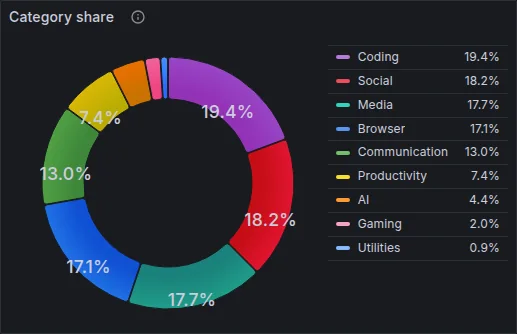
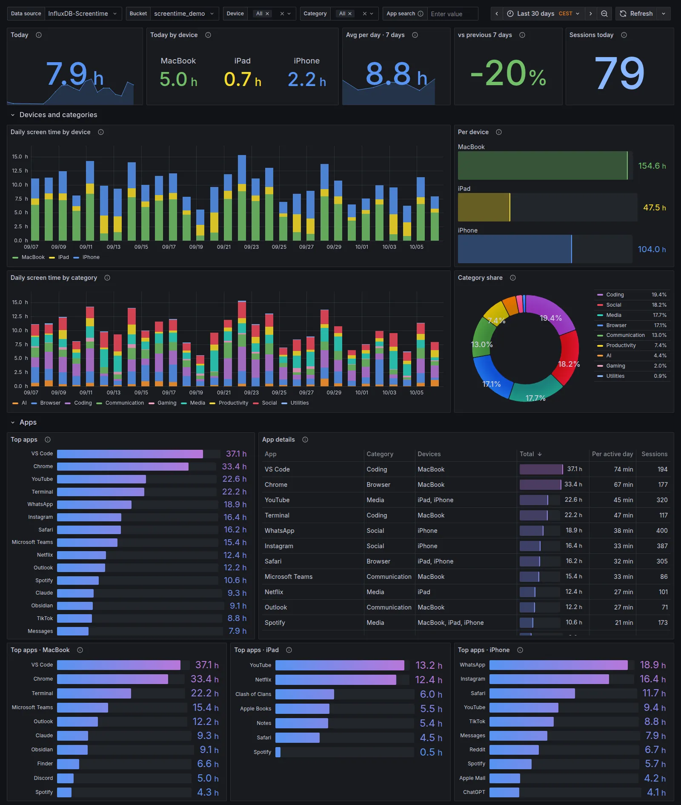
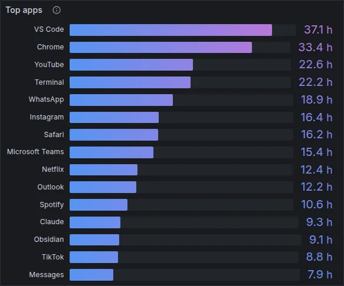
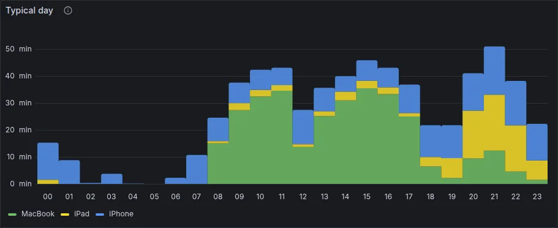
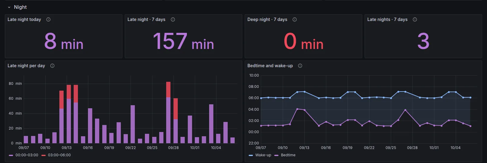
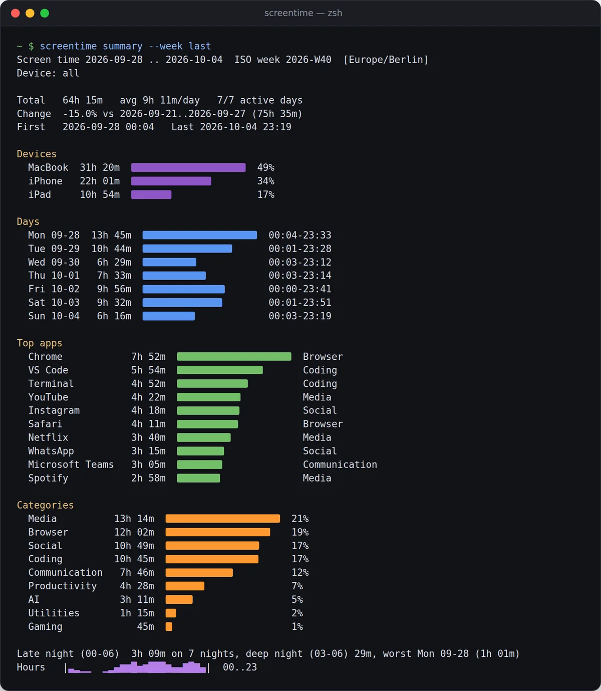

Devices and categories
Daily stacked bars per device and per category, the total per device and each category’s share.


Apple Screen Time from iPhone, iPad and Mac
Read on your Mac every 15 minutes, kept in local SQLite, sent to Grafana, Home Assistant, your terminal and your AI assistant.
then screentime setup
Free & open source · macOS · Python 3.11+ · MIT · v__VERSION__
Your Mac already receives your iPhone and iPad usage through iCloud. Every 15 minutes screentime run reads Apple’s stores, saves new sessions to SQLite and passes changed days on.
Overview, devices and categories, apps, night and rhythm, with filters for device, category and app. docker/docker-compose.yml starts InfluxDB 2.7 and Grafana 12 with the datasource and the dashboard provisioned; an existing Grafana imports screentime.json.
Daily stacked bars per device and per category, the total per device and each category’s share.

The top apps across all devices, an app table with sessions and average per active day, and the top ten per device.

A typical day as average minutes per hour, sessions per day, and a weekday by hour grid.

Use after midnight is counted on its own: in the dashboard, in Home Assistant, in every report and over MCP.
Sessions crossing a boundary are split, and a night counts towards the day it falls on. Bedtime and wake-up frame the night’s longest gap of at least three hours without use on any device.

Sensors per device, per night and per week, updated every 15 minutes. No integration needed.
Sensors and automationssensor.screentime_total474.0 minsensor.screentime_iphone132.0 minsensor.screentime_iphone_late_night8.0 minsensor.screentime_week1006.0 minsensor.screentime_top_appVS Codesensor.screentime_last_sync23:45- alias: Late-night screen time triggers: - trigger: numeric_state entity_id: sensor.screentime_iphone_late_night above: 30 actions: - action: notify.notify data: message: Still up after midnight.

screentime summary reports a week, a day or any range: total, change against the period before, devices, days, top apps, categories, late night and an hour-of-day sparkline.
summary --week lasttextsummary --day --format markdownfor notessummary --format jsonfor scriptsdump --daily -o days.csvCSV or JSONBoth read the database read-only, so they never get in the way of the next sync.
screentime mcp lets Claude, Codex or Cursor answer questions from your local data, read-only.
Needs the [mcp] extra. Claude Desktop, Codex and Cursor: docs/mcp.md. Or let an agent do the whole setup: the prompt.
Was I on screens after midnight last week? Which night was the worst?
get_late_night last_week
Yes, every night. 3 h 09 min after midnight in total, 29 min of it after 03:00.
The worst was Sunday into Monday: 1 h 01 min, the only night past 03:00. Friday into Saturday came close with 52 min.
Demo data
You need a Mac signed in to the same Apple Account as your iPhone and iPad, with Screen Time → Share Across Devices on for every device, and uv, which brings its own Python 3.11+.
One package, one command, from GitHub.
Finds and names your devices, tests InfluxDB and Home Assistant, writes the config, runs a first sync and installs the agent.
Apple’s stores are protected. Allow your terminal, and the Python interpreter that setup prints for the background agent, under Privacy & Security → Full Disk Access. screentime doctor checks the rest.
Everything stays on your Mac unless you configure a sink. Unknown apps are named from the Mac first; only bundle ids it cannot name go to Apple’s public lookup API, and [lookup] enabled = false turns that off. What an assistant sends to its model is up to the assistant.
A few weeks; Biome holds about four. The first sync reads what is still there, and anything older exists only if the exporter was running. Read-only towards Apple: knowledgeC.db is read through a temporary copy.
iPhone and iPad data reaches the exporter through a Mac with Screen Time sharing on; there is no iOS app. Tested on macOS 27 on Apple silicon. Not on PyPI yet: install from GitHub with uv, pipx or pip.
270+ bundle ids ship with a name and one of 14 categories. Installed Mac apps name themselves; iPhone apps outside the App Store keep a guessed name until you name them in [apps] (how). More mappings are welcome in pull requests.
v2 replaces the CSV, the .env file and aw-import-screentime with one installed tool, and the v1 Home Assistant entity ids stay. The steps are in docs/migration.md, the changes in the changelog.
An independent open-source hobby project, not affiliated with, endorsed or sponsored by Apple. Apple, Screen Time, iPhone, iPad, Mac, macOS and iCloud are trademarks of Apple Inc., used only to describe the data the project reads.